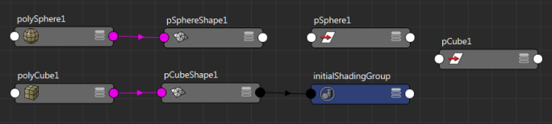

本主题同时适用于节点编辑器和 Hypershade。
使用“添加制图模式”(Additive Graphing Mode)选项可以为节点制图并将其添加到现有网络图表中。启用此选项、选择一个节点并单击  、
、 和
和  图标之一，以对选定节点制图，并将其添加到现有网络中。
图标之一，以对选定节点制图，并将其添加到现有网络中。
可以通过以下三种方式之一启用“添加制图模式”(Additive Graphing Mode)：
- （仅限节点编辑器）通过选择“选项 > 添加制图模式” (Options > Additive Graphing Mode)
- 从“节点编辑器”(Node Editor)工作区标记菜单中选择“添加制图模式”(Additive Graphing Mode)。有关详细信息，请参见节点编辑器标记菜单。
- 在按住 Shift 键的同时单击 、 和 图标之一，可为选定的节点制图并将其添加到现有网络中
示例
- 选择“选项 > 添加制图模式”(Options > Additive Graphing Mode)以启用“添加制图模式”(Additive Graphing Mode)选项。
- 创建一个球体，然后单击 按钮为输入连接制图。
- 创建立方体。选定立方体后，单击 按钮。
结果图如下所示：

对于球体，仅为输入连接制图，但对于立方体，将会为输入和输出连接制图。
注： （仅限节点编辑器）如果已禁用“同步节点编辑器/视口选择”(Sync Node Editor/Viewport Selection)选项以便在场景中选定的内容不必与在节点编辑器中亮显的内容同步，则会使用此模式为在节点编辑器中已激活（亮显）的内容制图，而不会为在场景视图中选定的内容制图。有关同步选择的详细信息，请参见“节点编辑器”(Node Editor)中的选择。